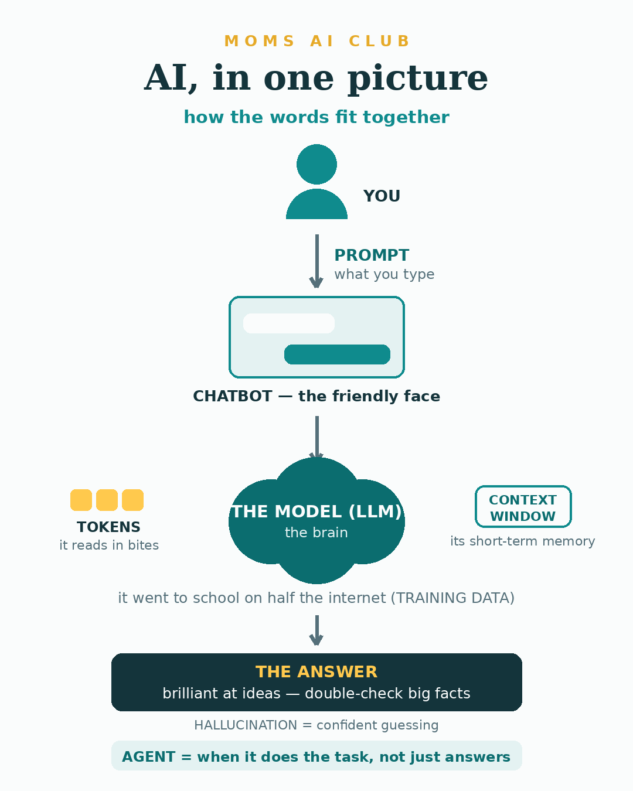

Every AI word you keep hearing — at book club, on the news, from that one coworker — translated into actual human. Read it once and you'll never nod along blankly again.
Here's the secret about AI jargon: none of it is hard. It was just named by engineers, and engineers name things the way they name their Wi-Fi networks. So here's the whole vocabulary, sorted the way you'll actually meet it.

The whole thing, in one picture. Keep it in mind as you read.
The umbrella word for computers doing things that used to need a human brain — writing, planning, recognizing your face in photos.
You'll hear it: everywhere, about everything. It's the "organic" of technology now.
AI that makes things — words, images, music — instead of just sorting or finding things. Claude and ChatGPT are this kind.
You'll hear it: "generative AI is changing everything" — now you know it just means "the kind that writes."
The actual brain. When people say "the new model is smarter," they mean a new version of the brain, like a phone upgrade.
You'll hear it: "which model are you using?" — a techy way of asking which brain you're talking to.
The specific type of brain behind Claude and ChatGPT. It read half the internet to learn how people talk.
You'll hear it: in articles trying to sound serious. Mentally replace "LLM" with "the brain" and keep reading.
The friendly window you type into. The model is the brain; the chatbot is the face it wears.
You'll hear it: "I asked my assistant" — from people who six months ago said this was all a fad.
What you type. That's it. A text message to a very eager assistant.
You'll hear it: "you need better prompts" — which just means "say more about what you want."
Fancy words for asking better. Saying "shorter," "warmer," or "that won't work because…" counts. You already do this with your family.
You'll hear it: as a job title, hilariously.
The bite-size pieces AI reads. "Unbelievable" is about 3 bites. Every plan's limits are counted in these.
You'll hear it: "you've hit your limit" — you ran out of bites, come back later.
Its short-term memory — how much of your conversation it can hold in mind at once. Marathon chats get forgetful at the end.
You'll hear it: when a long chat starts repeating itself. Fix: start a fresh chat for a new topic.
Your plan's daily allowance of questions. Hit it and you'll be asked to wait a few hours.
You'll hear it: "you've reached your limit." Hitting it often is the sign you're ready for the paid plan.
When AI confidently makes something up. Not lying — guessing, with confidence.
You'll hear it: in every scary AI headline. The fix is boring: double-check dates, prices, anything big.
Everything the brain read in school. It's why AI knows recipes and Shakespeare, but not your school's spirit week schedule.
You'll hear it: "it was trained on…" — meaning "here's what it read growing up."
How it learned: from millions of examples, not from a rulebook. Like how your kids learned sarcasm — nobody taught it, they absorbed it.
You'll hear it: from people who want you to know they took a course.
AI picked up the internet's habits — the good ones and the bad ones. It can lean on stereotypes without knowing it.
You'll hear it: in serious discussions, rightly. It's why your judgment stays in charge.
A recipe a computer follows. Also what decides what your feed shows you. Older than AI and not the same thing.
You'll hear it: "the algorithm is hiding my posts." Sometimes even true.
It handles more than text — photos, voice, documents. Snap a picture of the permission slip and ask "what do I need to do?"
You'll hear it: in product announcements. Translation: "you can show it things now."
AI that does the task, not just answers. It can look things up, take steps, finish the job.
You'll hear it: constantly this year. "Agents are the future" = "soon it won't just suggest the restaurant, it'll book it."
Someone's list of go-to tools. Yours might just be Claude. That counts. That's a stack.
You'll hear it: "what's your stack?" — tech's version of "what's in your bag?"
AI-faked video or audio of a real person. Worth knowing exists — and worth one honest chat with your kids: "video proof" isn't automatic proof anymore.
You'll hear it: in the news. Healthy skepticism is the new media literacy.
The sci-fi milestone: AI as capable as a person at basically everything. Not what you're using today; mostly a debate topic.
You'll hear it: from excitable podcast guests. You can now nod knowingly instead of blankly.
That's the whole lesson. Print the glossary, stick it wherever you keep the school calendar, and consider yourself officially unjargoned. It was never too techy. 💛